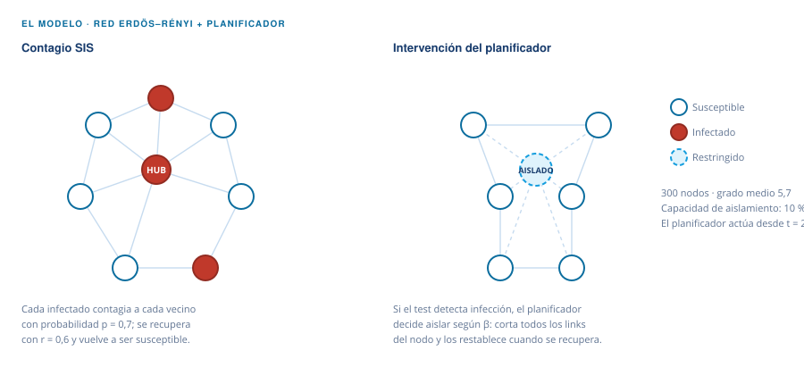
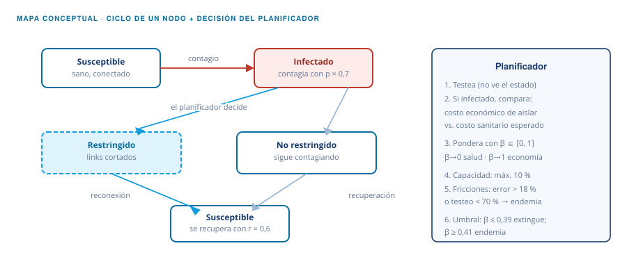
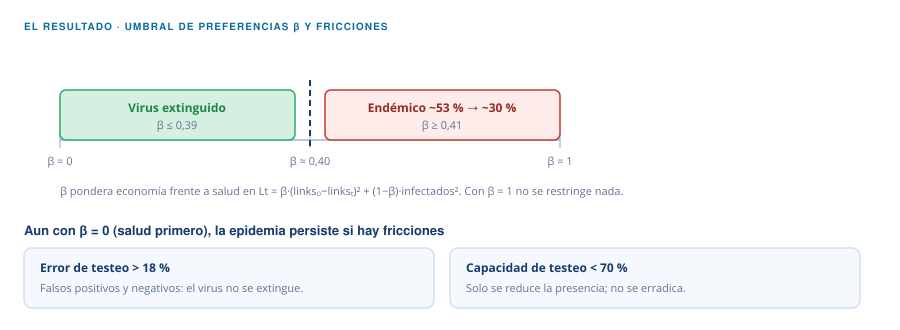

Sistemas sociales complejos · Diciembre 2021
Dynamics of contagion and immunity thresholds in social environments: an approach from graph systems
Gaston Garcia · Francisco Guerrero · Ramiro Rossi
Curso de Sistemas Sociales Complejos
Cómo funciona el modelo
El paper pregunta cuánto tiene que pesar la economía frente a la salud para que una epidemia se vuelva endémica. La respuesta es un umbral de preferencias del planificador, y lo que lo mueve es a qué nodos decide aislar y con qué información cuenta.
El modelo
Los experimentos corren sobre una red aleatoria de Erdös–Rényi de 300 nodos con grado medio de conectividad 5,7. Entra una enfermedad con tasa de contagio p = 0,7 y tasa de recuperación r = 0,6. Cada nodo puede infectarse aunque ya se haya enfermado antes: es una variante del modelo SIS (susceptible–infectado–susceptible), que sin intervención converge a una endemia estable de alrededor del 53 % de la red infectada.
Desde la iteración 2000 actúa un planificador —un gobierno externo a la red— que conoce la matriz de adyacencias pero no el estado de cada nodo: tiene que testear. Si el test detecta infección, decide si restringe el nodo cortando todos sus links (con capacidad máxima del 10 % de la red) y lo reconecta cuando sana. La decisión minimiza la función de pérdida Lt = β·(links₀ − linkst)² + (1 − β)·infectadost², donde β ∈ [0,1] pondera economía frente a salud: β cercano a 0 es salud primero, β cercano a 1 es economía primero.


Ejercicio: por qué los hubs mandan
Cada vecino infectado contagia con probabilidad p de forma independiente. Con k vecinos infectados, la probabilidad de contagiarse en un paso es P = 1 − (1 − p)k: crece rápido con k. Por eso un hub — con muchos vecinos — se contagia casi seguro y luego contagia a todos. Mueve p y k y compruébalo simulando pasos.
Pulsa «Simular un paso» para ensayar el contagio.
El resultado
Con β = 1 el planificador no restringe nada y la epidemia sigue su curso endémico. A medida que β se acerca a 0, los casos endémicos caen y los nodos aislados suben, hasta que con β = 0 el virus se extingue rápido. En el medio hay una discontinuidad: con β ≤ 0,39 la epidemia se extingue; con β ≥ 0,41 se vuelve endémica. El planificador no necesita ser muy agresivo con la estructura de conexiones para erradicar el virus, siempre que la política esté sesgada hacia los nodos más influyentes.

Por qué importa
El umbral es una cota superior: supone testeo masivo y perfecto. Con error de diagnóstico mayor al 18 %, o con capacidad de testeo menor al 70 % de la población, la epidemia se vuelve endémica aun con preferencias extremas por la salud (β = 0). Aislar conexiones, por más sesgado que esté hacia los nodos influyentes, no alcanza cuando la información es incompleta y la tecnología imperfecta: ahí la discusión pasa a si vale la pena el costo económico del aislamiento y a complementar con inmunización, como campañas de vacunación priorizadas por influencia en la red.
Calibración base
300 nodos · grado medio 5,7 · p = 0,7 · r = 0,6 · 10.000 iteraciones · el planificador actúa desde t = 2000 · capacidad de aislamiento 10 %.
Supuesto a notar
Todos los nodos comparten la misma productividad, estén sanos o infectados. Con productividad heterogénea, aislar un infectado poco productivo tendría menor costo de oportunidad.
Código
Los códigos de las simulaciones están disponibles a pedido a los autores.
Garcia, G., Guerrero, F. y Rossi, R. (2021). Dynamics of contagion and immunity thresholds in social environments: an approach from graph systems. Sistemas Sociales Complejos, diciembre de 2021.